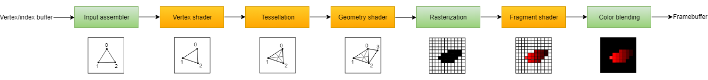

What is deferred rendering and why use it
Well to answer that we need to know how rendering even works. Normally you tell OpenGL to draw some vertex data(position, normal, UV...). OpenGL takes the data and gives it to current shader in use. First the vertex shader, then tessalation shaders, geometry shader after that to rasterizer and finally to fragment shader.
In forward rendering for every pixel computed by rasterizer we do lighting calculations, even if it's behind object or completely out of view(without culling). Rasterizer only changes positions into pixels depending on the resolution. As you may imagine doing lighting calculations on every pixel, even the not visible ones, is very slow.
To solve this problem we use deferred rendering or sometimes called deferred shading. Simply we still render all objects in the scene but instead of doing lighting calculations right away we only store necessery object data(positions, normals etc.) by storing them into textures(see image on right). After we render all objects we render a quad over the whole screen. There we get the object information for textures and we use it to calculate lighting for only visible pixels.
This doesn't necessarily mean better performance. With scenes that have small amount of objects, forward rendering performs better. But with large scenes it's the other way around. You see for deferred shading the amount of lighting calculations is determined by screen resolution. For full hd it's 1920 x 1080 = 2'073'600, for 4k it's 3840 x 2160 = 8'294'400 which makes it more consistent. But with forward shading it's determined by both resolution and polygon count. for a scene that covers whole screen it will be way more than in deferred rendering.